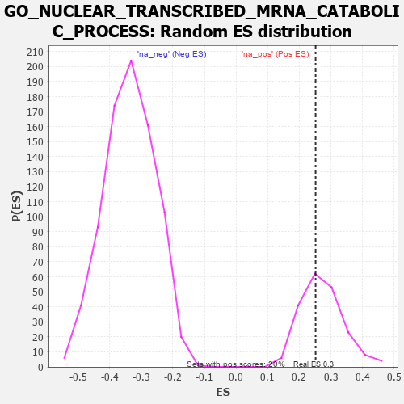

| | | Dataset | 7d |
| Phenotype | NoPhenotypeAvailable |
| Upregulated in class | na_pos |
| GeneSet | GO_NUCLEAR_TRANSCRIBED_MRNA_CATABOLIC_PROCESS |
| Enrichment Score (ES) | 0.25152475 |
| Normalized Enrichment Score (NES) | 0.92128116 |
| Nominal p-value | 0.57360405 |
| FDR q-value | 0.81270427 |
| FWER p-Value | 1.0 |
Table: GSEA Results Summary
 Fig 1: Enrichment plot: GO_NUCLEAR_TRANSCRIBED_MRNA_CATABOLIC_PROCESS
Fig 1: Enrichment plot: GO_NUCLEAR_TRANSCRIBED_MRNA_CATABOLIC_PROCESS
Profile of the Running ES Score & Positions of GeneSet Members on the Rank Ordered List
| PROBE | GENE SYMBOL | GENE_TITLE | RANK IN GENE LIST | RANK METRIC SCORE | RUNNING ES | CORE ENRICHMENT | | 1 | CNOT7 | | | 348 | 0.750 | -0.0055 | Yes |
| 2 | MLH1 | | | 423 | 0.679 | 0.0200 | Yes |
| 3 | CNOT6 | | | 462 | 0.655 | 0.0487 | Yes |
| 4 | CNOT2 | | | 514 | 0.625 | 0.0743 | Yes |
| 5 | SMG9 | | | 643 | 0.579 | 0.0878 | Yes |
| 6 | PARN | | | 660 | 0.572 | 0.1151 | Yes |
| 7 | WDR61 | | | 734 | 0.549 | 0.1340 | Yes |
| 8 | EDC4 | | | 957 | 0.494 | 0.1313 | Yes |
| 9 | SMG8 | | | 1251 | 0.438 | 0.1168 | Yes |
| 10 | CNOT3 | | | 1274 | 0.435 | 0.1363 | Yes |
| 11 | NOCT | | | 1402 | 0.409 | 0.1413 | Yes |
| 12 | LSM4 | | | 1426 | 0.405 | 0.1591 | Yes |
| 13 | LSM6 | | | 1444 | 0.402 | 0.1776 | Yes |
| 14 | HBS1L | | | 1454 | 0.399 | 0.1969 | Yes |
| 15 | LSM7 | | | 1754 | 0.344 | 0.1768 | Yes |
| 16 | AGO2 | | | 1767 | 0.343 | 0.1928 | Yes |
| 17 | LSM2 | | | 1829 | 0.332 | 0.2021 | Yes |
| 18 | DCP1A | | | 1877 | 0.323 | 0.2128 | Yes |
| 19 | DDX6 | | | 1915 | 0.318 | 0.2244 | Yes |
| 20 | LSM1 | | | 2098 | 0.291 | 0.2163 | Yes |
| 21 | CNOT4 | | | 2161 | 0.283 | 0.2230 | Yes |
| 22 | LSM3 | | | 2282 | 0.263 | 0.2213 | Yes |
| 23 | NBAS | | | 2299 | 0.260 | 0.2326 | Yes |
| 24 | NCBP2 | | | 2383 | 0.248 | 0.2349 | Yes |
| 25 | PELO | | | 2386 | 0.247 | 0.2473 | Yes |
| 26 | PDE12 | | | 2608 | 0.211 | 0.2302 | Yes |
| 27 | PATL1 | | | 2610 | 0.210 | 0.2409 | Yes |
| 28 | EIF3E | | | 2634 | 0.207 | 0.2486 | Yes |
| 29 | CSDE1 | | | 2693 | 0.200 | 0.2515 | Yes |
| 30 | XRN1 | | | 2786 | 0.185 | 0.2494 | No |
| 31 | DCPS | | | 2873 | 0.170 | 0.2473 | No |
| 32 | PAN3 | | | 3054 | 0.142 | 0.2319 | No |
| 33 | SMG7 | | | 3141 | 0.131 | 0.2277 | No |
| 34 | SMG5 | | | 3285 | 0.108 | 0.2152 | No |
| 35 | RBM8A | | | 3355 | 0.096 | 0.2114 | No |
| 36 | TUT4 | | | 3394 | 0.090 | 0.2112 | No |
| 37 | CNOT1 | | | 3473 | 0.081 | 0.2055 | No |
| 38 | CASC3 | | | 3727 | 0.037 | 0.1755 | No |
| 39 | SMG1 | | | 3843 | 0.021 | 0.1621 | No |
| 40 | PCID2 | | | 4258 | -0.051 | 0.1125 | No |
| 41 | DXO | | | 4964 | -0.191 | 0.0333 | No |
| 42 | ATM | | | 5210 | -0.249 | 0.0151 | No |
| 43 | PAN2 | | | 5807 | -0.408 | -0.0392 | No |
| 44 | TUT7 | | | 5997 | -0.471 | -0.0389 | No |
| 45 | DDX5 | | | 7152 | -1.037 | -0.1314 | No |
| 46 | HELZ2 | | | 7466 | -1.356 | -0.1014 | No |
| 47 | XRN2 | | | 7488 | -1.384 | -0.0331 | No |
| 48 | DCP2 | | | 7724 | -1.833 | 0.0312 | No |
Table: GSEA details [plain text format]

Fig 2: GO_NUCLEAR_TRANSCRIBED_MRNA_CATABOLIC_PROCESS: Random ES distribution
Gene set null distribution of ES for GO_NUCLEAR_TRANSCRIBED_MRNA_CATABOLIC_PROCESS